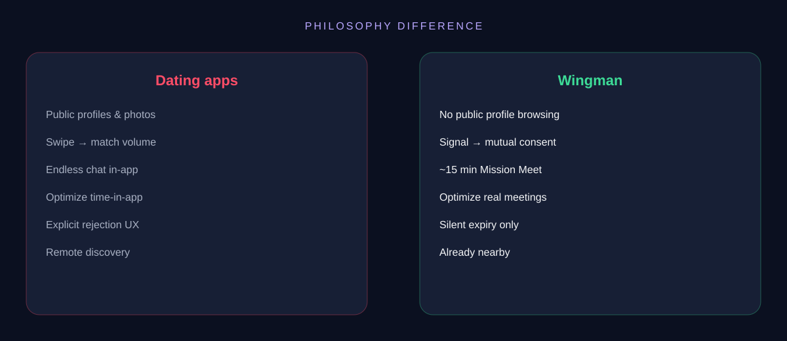
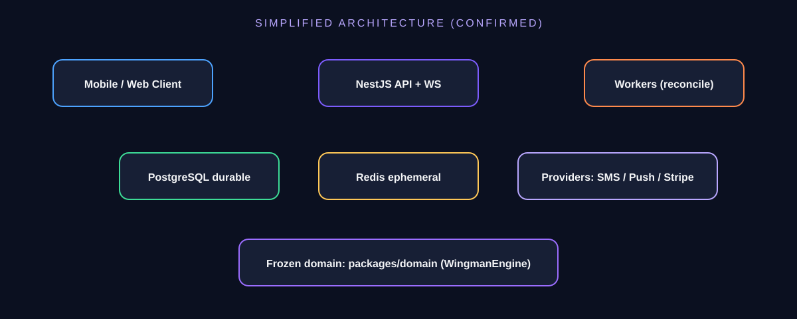

Wingman
10
Competition
Tinder/Bumble optimize matches. Wingman optimizes one real approach — then returns you to Radar.

Proximity → permission → real meeting. A protocol company, not another swipe feed.
Product Owner: Igor Chernikov · Spec V4.1 · Prepared for investors, partners & users
Confidential — factual status as of August 2026 repository documentation.
People cross paths daily with someone they’d like to meet — and say nothing.
Dating apps optimized remote discovery and engagement. Wingman optimizes the last meter: mutual, local, time-boxed permission to say hello.
Pew (US): 53% of adults under 30 have used online dating; experiences often mixed (2022 survey, published 2023).
Make the first acquaintance easy.
Constraints: Free 2 Signals/day · 1 active connection · ~15 min Mission chat.

Silent expiry. No public profile browsing.
Connection only after mutual validation.
Short Mission designed to meet — then leave the app.
Frozen protocol engine · NestJS API · Postgres/Redis · WebSocket · Billing→Entitlements · Backend V1 GO (S20).
Radar Intelligence, Context, Destiny V2, Anti-Abuse, Geo, Measurement (learning OFF).
Surface UI live · Live Field Test S27–S34 · S27A OPEN · SMS OTP deferred.
Public Destiny, payments go-live, city density expansion, learning after baselines.
Per-purpose, versioned, append-only.
Approximate location · ephemeral selfies · anti-contact chat filter.
Block/report · graduated anti-abuse · no auto permanent bans.
Wingman does not guarantee physical-world safety. It designs for consent and control.
More Signals, longer tickets, slightly longer windows. Discovery priority increases probability — never guarantees exposure.
Night Pass · Event Pass · Verified Selfie · Rematch · Cool Down Skip.
Never: boosted profiles, ads in meet flow, selling behavioral data.
Payments architecture exists; checkout disabled. Unit economics: HYPOTHESIS TO VALIDATE.
Seed venues and events where co-presence is already natural. Expand city-by-city when meeting quality holds.
Growth gated by real-meeting outcomes — not vanity engagement.
Tinder/Bumble optimize matches. Wingman optimizes one real approach — then returns you to Radar.

Protocol needs co-presence. Mitigate via venue/event seeding.
Physical meets carry risk. Mitigate via design + education + moderation ops.
Misread as dating app. Mitigate via ruthless messaging discipline.
Must clear Live Field Test before pilot claims.
Wingman invested first in correct state machines, entitlements, safety invariants, and certification — then advanced intelligence behind flags — then a disciplined field-test track.
Product Owner: Igor Chernikov. Spec V4.1. Governance: facts before tickets.
This deck does not invent a raise size, valuation, or revenue plan.
North star: confirmed real-world meetings.
Acceptance & mutual validation rates
S26 baseline: connectionToMissionRate
Outcome confirmation · report rate floor
Not a feed. A protocol.